Presentaciones
Generalidades del lenguaje
- Diseñado y creado por la compañía Ericsson el 1986 y cedido como código de uso libre en 1998. Inicialmente concebido para aplicaciones de telefonía.
- Erlang está diseñado y concebido para: sistemas distribuidos, sistemas en tiempo real, sistemas tolerantes a fallos y aplicaciones de alta disponibilidad y de uso continuo.
- Se distingue por manejar datos inmutables, contar con pattern matching y, sobre todo, simplificar la creación, administración y comunicación de procesos.
- La filosofía “let it crash" de Erlang consiste en permitir que los errores ocurran y sean manejados adecuadamente para lograr sistemas más robustos y tolerantes a fallos.
Instalación
Es posible instalar Erlang en cualquier sistema operativo, a continuación se dan las indicaciones de cómo hacerlo para cada uno:- Windows: 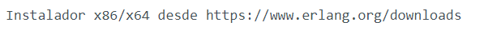
- Linux & macOS - Pre-built: 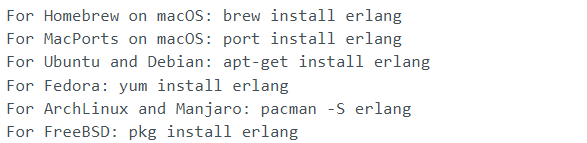
- Código fuente: 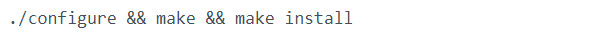
- Intellij IDEA: Erlang Plugin
- VS Code: Erlang/OTP Erlang-LS
Tour por Erlang
- Introducción
- Lenguaje funcional: Los programas son composiciones de funciones.
- Manejo de tipos dinámicos: Los tipos de las variables dependen del contenido.
- Paso de mensajes: Los procesos se pueden comunicar en red a través de paso de mensajes
-
Lenguaje modular:
- Un módulo por fichero, estos deben tener el mismo nombre. Es necesario definir el nombre, los ficheros que importa, las funciones que exporta y su implementación.
- Se pueden indicar otros metadatos como autor.
- Cada módulo se compila por separado
- Las funciones se invocan desde el exterior usando la siguiente sintaxis modulo:func(args)
- Tipos de datos
- Enteros: Los enteros se representan simplemente escribiendo el número, ya sea positivo o negativo. 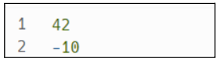
-
Flotantes: Los flotantes se representan escribiendo el número con un punto decimal

- Átomos: Se escriben iniciando con una minúscula o entre comillas simples si contienen caracteres especiales 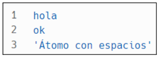
- Strings: Las cadenas de caracteres se representan entre comillas dobles 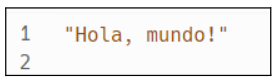
- Tuplas: Las tuplas se representan escribiendo sus elementos entre llaves 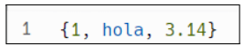
- Listas: Se representan escribiendo sus elementos entre corchetes: 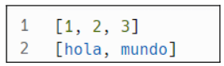
- Mapas: Los mapas son pares llave-valor y se representan entre llaves iniciando con #. 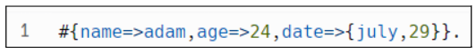
- Record: Similar a una struct en C. Se declaran con la palabra reservada record 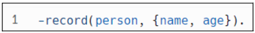
- Booleanos: Pueden tener los valores de true o false. 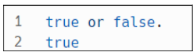
- Variables
- Empiezan con mayúscula: 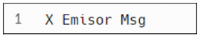
- Anónima: Se usa el símbolo '_' para denotar variables anónimas
- Asignación No-destructiva: Las variables solo se pueden asignar una única vez.
- Funciones
- Posee un número fijo de parámetros. Si definimos otra función con el mismo nombre y distinto número de parámetros, se trata de una función distinta.
- En Erlang, no se utiliza explícitamente la palabra clave "return". En su lugar, el valor de la última expresión evaluada en una función se considera el resultado de esa función.
- Maneja guardas, que son expresiones lógicas opcionales que se evalúan antes de que se ejecute la cláusula. Si la guarda se evalúa como verdadera, se ejecuta la cláusula correspondiente. Si es falsa, Erlang pasará a la siguiente cláusula en la definición de la función. 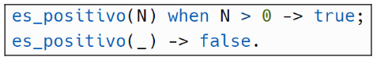
- Cuenta con uso de cláusulas, que proporcionan una forma de manejar diferentes casos o condiciones en una función y especifican qué debe hacer la función cuando se cumplen ciertos patrones o condiciones. 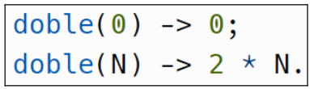
- Tiene patrones, que definen la estructura y los valores que se esperan en los argumentos de entrada de la función. Pueden contener variables, literales o combinaciones de ellos. Los patrones se utilizan para hacer coincidir los argumentos de la función con la cláusula correspondiente. 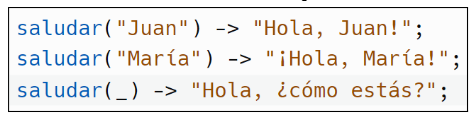
- Y por último las expresiones, que especifican el resultado que se devuelve cuando la cláusula es evaluada correctamente. Pueden ser cualquier expresión válida en Erlang, como una operación aritmética, una llamada a otra función, una asignación de variables, etc. 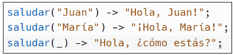
- Estructuras de control
- If-Else: La estructura if-else nos permite tomar decisiones basadas en una condición. Su sintaxis es la siguiente: 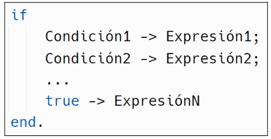 En esta estructura, se evalúan las condiciones en orden hasta encontrar una que sea verdadera. La expresión asociada a esa condición se evalúa y se devuelve como resultado. Si ninguna condición es verdadera, se evalúa la expresión asociada a true. Esta estructura se utiliza para realizar bifurcaciones condicionales.
- Case: La estructura case nos permite evaluar múltiples patrones y ejecutar diferentes acciones en función de esos patrones. La sintaxis es la siguiente: 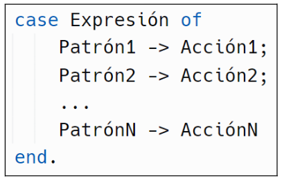 En esta estructura, la expresión se evalúa y se compara con cada patrón en orden. Cuando se encuentra un patrón que coincide, se ejecuta la acción asociada a ese patrón. Si ningún patrón coincide, se produce un error. El ‘case ‘se utiliza para realizar evaluaciones múltiples y tomar diferentes acciones en función de los resultados.
- Iteración mediante recursividad: Muchas definiciones pueden expresarse de forma recursiva mediante:
- Un caso base.
- Un caso general, que se define mediante una expresión con casos más simples.
- Funciones Built-In Las funciones Built-In, también conocidas como funciones incorporadas o predefinidas, son funciones que están integradas en el propio lenguaje Erlang y están disponibles sin necesidad de importar librerías externas. Estas funciones proporcionan una amplia variedad de características y funcionalidades útiles para el desarrollo de aplicaciones en Erlang. Algunas características comunes de las funciones Built-In en Erlang:
- Funciones matemáticas.
- Funciones de listas.
- Funciones de cadenas de caracteres.
- Funciones de manejo de tiempos.
- Reducción y unificación
- Actualizaciones: En Erlang, se utiliza un enfoque llamado "cambio sobre estructuras" para manejar las actualizaciones de software. Esto significa que, en lugar de reemplazar completamente una estructura de datos cuando se realiza una actualización, se comparten la mayor parte de los elementos entre diferentes versiones. Esto es posible debido a la inmutabilidad de los datos en Erlang.
- Semántica write-once: En Erlang, se sigue una semántica “write-once", lo que significa que una vez que un valor se asigna a una variable, no se puede modificar. Esta propiedad de inmutabilidad simplifica el razonamiento sobre el comportamiento de un programa, ya que se evitan los efectos secundarios inesperados causados por cambios en los valores de las variables.
- Pattern-matching: En Erlang, el pattern-matching es una característica poderosa que permite hacer coincidir valores con patrones específicos. Esto permite una mayor flexibilidad en la concordancia de patrones y la toma de decisiones basada en condiciones específicas.
- Higher-order functions: En Erlang, las funciones son ciudadanos de primera clase, lo que significa que se pueden pasar como argumentos a otras funciones y también se pueden devolver como resultados. Esto se conoce como funciones de orden superior o “higher-order functions". Este concepto permite una programación más modular y flexible, ya que las funciones se pueden combinar y componer de manera dinámica.
Particularidades de Erlang
Erlang es un lenguaje de programación funcional que soporta concurrencia, por lo que es particularmente útil para aplicaciones donde se deba:- Gestionar un gran número de actividades simultáneas.
- Ser fácilmente distribuible a través de una red de ordenadores.
- Ser tolerante a fallos de software y hardware.
- Ser escalable.
- Poder actualizarse y reconfigurar fácilmente sin tener que detenerse.
- Responder a los usuarios dentro de unos plazos estrictos.
- Creación de procesos: Se crea un nuevo proceso concurrente que evalúa funciones. El nuevo proceso se ejecuta en paralelo con la llamada. Dependiendo de la forma en la que se defina la función a evaluar, se debe usar alguna de las siguientes dos sentencias: 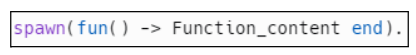 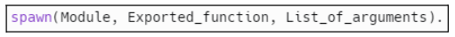
-
Comunicación entre hilos:
Para la comunicación entre hilos existen dos sentencias, una para enviar el mensaje y otra para recibir.
- “!” envía un mensaje al proceso con identificador Pid. El envío de mensajes es asíncrono.
- “Receive…end” recibe un mensaje que ha sido enviado a un proceso.